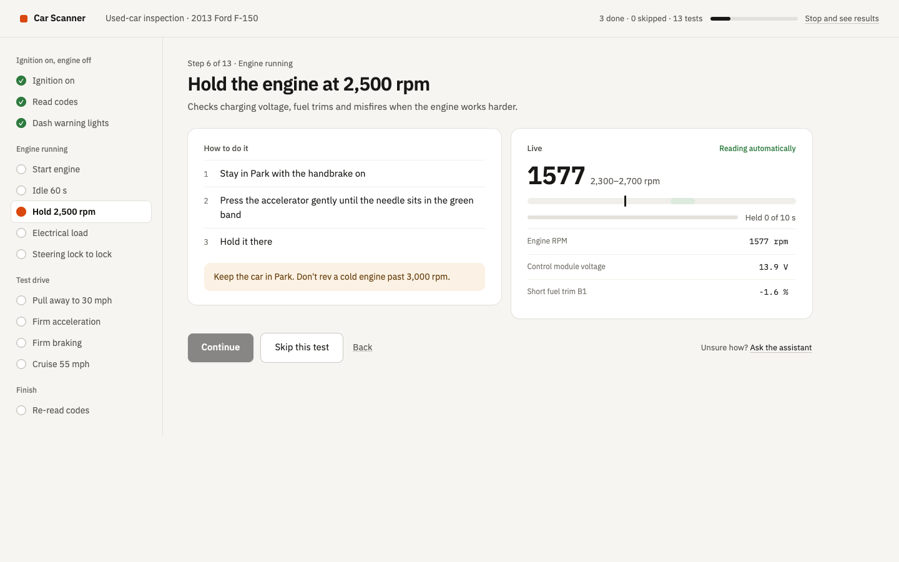
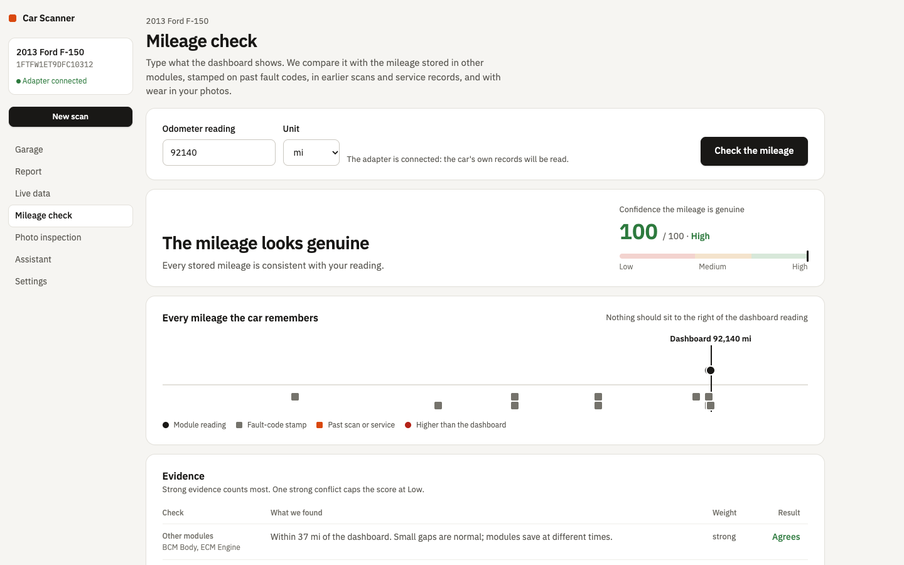

Diagnose any car from your laptop
Plug a USB OBD-II adapter into the car, open Car Scanner, and read every module: engine, ABS, airbags, body and more. Guided tests, a mileage check, a photo inspection and an AI assistant. Free, and everything stays on your computer.
No adapter yet? The app includes a demo car, so you can try everything first. Older Intel Mac? Run it from source. All releases.

What it does
Every module, not just the engine
Generic OBD-II codes plus a scan of every module on CAN cars, labelled active, pending or history.
Guided tests
Step-by-step checks with live readings: hold 2,500 rpm, switch on every load, drive at a steady speed. Skip any step.
Fix any problem
Describe it in your own words: a noise, a light, a vibration. The AI reads the car, looks up known issues and builds a plan.
Mileage check
Compares the odometer with what other modules and past fault codes remember, and gives a confidence score.
Photo inspection
A guided 29-shot walkaround. The AI flags repairs, rust, leaks and wear, and tells you what's missing.
Your data, your keys
Your garage stays on your computer. The AI uses your own Anthropic or OpenAI key, and only when you ask.

Setup
- Install. Mac: open the .dmg and drag Car Scanner to Applications. Windows: unzip and run CarScanner.exe.
- Open it the first time. The app isn't signed with a paid certificate yet, so your computer warns you. Mac: right-click the app and choose Open. Windows: More info → Run anyway.
- Connect. Plug the adapter into the OBD port under the dashboard and into your laptop, turn the ignition on, and pick it in the app. Windows may need the FTDI driver for the vLinker FS.
- Optional: AI. In Settings, paste an Anthropic (Claude) or OpenAI API key to turn on problem plans, photo reports and the assistant.
Privacy: the app runs at 127.0.0.1 and only answers on your computer. Photos and scans are stored in your user folder. Nothing is sent anywhere unless you use the AI, and then only to the provider whose key you entered.
For developers
git clone https://github.com/lordjhamb/car-scanner
cd car-scanner
make install
make runPython + FastAPI backend, no-build ES-module frontend, 150+ tests that run against a built-in car simulator. MIT licensed.